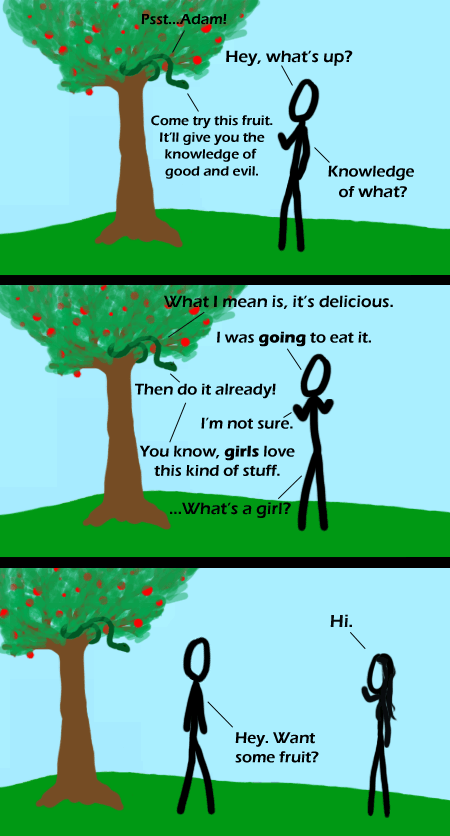

Comic JK 319
When I Feel Like It
⇤
<
?
>
⇥

⇤
<
?
>
⇥
Forum
.
RSS
.
Digg
.
Facebook
.
Reddit
.
Twitter
.
Stumbleupon
She's got nice bewbs! Enter your thoughts on number 319 here. Please, no spamming yer maw, trolling yer maw, or phreaking yer maw. That snake has no legs. It's going to lose its legs after they eat the apple... They all get this wrong in their pictures... >It ought to also have little arms, a top hat and a monocle as well. And go, "Well, how d'y'do?" >>It didn't have legs, god just never knew that and the snake got away with it. >>>God just got the snake to wrap around and hold the branch, rather than just look like a green stick and fall to the ground. Now you want him to add legs to it, just to yank them off again two scenes later? /me wonders what percentage of readers of this comic are atheists >i'm not. personally, i am a theist^2-Agonistic >IT'S OVER 9000!! >what does atheism have to do with jokes about creation myths? >>Technically it's not a creation myth, as the events happened after the creation of the world.... It sums things up pretty nicely imho... women are the source of all trouble xD Well, the story goes that all snakes were once lizards (since they had legs). Now, the woman was tricked into eating the fruit from the only tree they were told to keep away from (they had plenty of other trees to choose from that had nicer fruit). Now, the woman then gives some of the fruit to the man, who accepts even though he knows it is a stupid idea because he thinks the woman is hot and thinks he can get an enjoyable time out of it. Then poisoness lizards get their legs taken from them and turn into snakes as punishment for tricking the woman. Humans become mortal as punishment for the man eating the fruit even though he knew that he shouldn't. >But... if "God" was omnipotent and all that, why couldn't she... put the tree somewhere else ? or put a force-field around it ? or make it repel humans ? or *prevent* the serpent from tempting them ? or... and so on... (at this point, various theologians will point out that "the apple" is *symbolic* and has no connection to Steve Jobs...) _______________________________________¶¶¶¶¶¶¶¶¶¶¶¶¶¶¶¶¶¶¶¶¶¶¶¶¶¶ _______________ >>The "Fruit" not the "Apple" - "Apple" is never mentioned except by people who've never read the thing... >>>Actually, that's because of Latin scribes/illustrators. Apple and Evil in latin are Malum and Malus, can't remember which is which, but somebody thought it would be hilarious to draw the forbidden fruit as an apple, and it stuck. That's right, it's a pun. >Well, it's widely considered a test to see if humanity deserved having everything perfect. Apparently we failed that one big time.